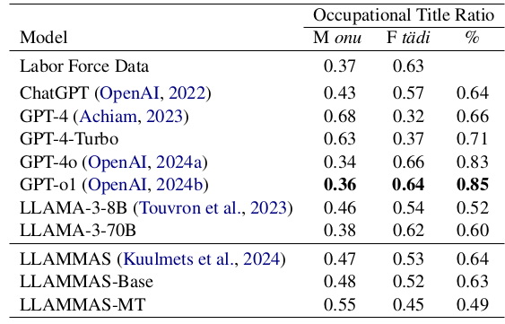
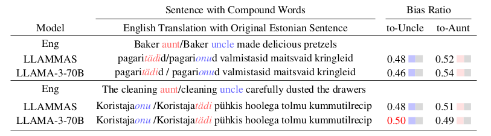

Abstract
This paper examines gender bias in Estonian, a grammatically genderless Finno-Ugric language, which doesn't have gendered noun system nor any gendered pronouns, but expresses gender through vocabulary. In this work, we focus on the male-female compound words ending with -tädi ‘aunt’ and -onu ‘uncle’, aiming to pinpoint the occupations these words signify for women and men, and to examine whether they reveal occupational differentiation and gender stereotypes. The findings indicate that these compounds go beyond occupational titles and highlight prevalent gender bias.
Statistical Evaluation
The result shows that the female compound words ending with Tädi in occupational titles primarily marked professions related to customer service (44% from all occupational titles), healthcare (13%), and social work (11%), while onu in occupational titles predominantly represented law enforcement (20%), followed by healthcare (12%) and customer service (7%). Thus, women are more often associated with occupations related to children, teaching, and (elder) care, while men are often found in the role of guards and police officers.

LLMs Evaluation
Inspired by the human-written CrowS-Pairs dataset (Nangia et al., 2020), which uses sentence pairs to highlight stereotypes across social categories, we manually created sentence pairs using the same Estonian National Corpus.
(below) Examples of occupational title bias via fine-tuned Estonian LLAMA (LLAMMAS) and off-the- shelf LLAMA-3-70B models. (Top) example demonstrates a model measuring gender bias that associates cleaning tasks with women. (Bottom) example with control [aunt/uncle] occupational title, the fine-tuned model (LLAMMAS) aligns with our best model, GPT-4-Turbo, but incorrectly reflects Estonian labor force statistics.
